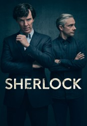

")
Alternativ: Sherlock
 
 IMDB-Wertung: 9.2 / 10
IMDB-Wertung: 9.2 / 10  Metascore:
Metascore: 
Sherlock Holmes meldet sich zurück und ist jünger und energetischer denn je! In der ebenso originellen wie spannenden Neuauflage des klassischen Stoffes nach Sir Arthur Conan Doyle, begibt sich Holmes mit Smartphone und Notebook bewaffnet auf große Verbrecherjagd im London des 21. Jahrhunderts. Unterstützung erfährt er in Dr. John H. Watson, einen posttraumatisierten Kriegsveteranen, der Holmes bei dessen Ermittlungen nicht von der Seite weicht.
Jahr: 2010
Dauer: 88 Minuten
FSK: 12
Land: England Studio: ARDTonspuren: DTS - ,
Untertitel:
Auflösung: 1080p (1920x1080) Größe: 6440 MB
Genre: Drama, Krimi, Mystery, TV-Serie
Regisseur: Paul McGuigan, Nick Hurran, Coky Giedroyc, Euros Lyn, Toby Haynes
Drehbuch: Mark Gatiss, Steven Moffat, Arthur Conan Doyle, Steve Thompson
Soundtrack:
Darsteller:
 Benedict Cumberbatch als Sherlock Holmes
Benedict Cumberbatch als Sherlock Holmes Martin Freeman als Dr. John Watson
Martin Freeman als Dr. John Watson Rupert Graves als DI Lestrade
Rupert Graves als DI Lestrade Mark Gatiss als Mycroft Holmes
Mark Gatiss als Mycroft Holmes Jonathan Aris als Anderson
Jonathan Aris als Anderson Andrew Scott als Jim Moriarty
Andrew Scott als Jim Moriarty Lara Pulver als Irene Adler
Lara Pulver als Irene Adler Philip Davis als Jeff
Philip Davis als Jeff Lisa McAllister als Anthea
Lisa McAllister als Anthea Lars Mikkelsen als Charles Magnussen
Lars Mikkelsen als Charles Magnussen Gemma Chan als Soo Lin Yao
Gemma Chan als Soo Lin Yao Zawe Ashton als Sally Donovan
Zawe Ashton als Sally Donovan Al Weaver als Andy Galbraith
Al Weaver als Andy Galbraith Russell Tovey als Henry Knight
Russell Tovey als Henry Knight Joseph Long als Angelo
Joseph Long als Angelo Katherine Parkinson als Kitty Riley
Katherine Parkinson als Kitty Riley Danny Webb als DI Carter
Danny Webb als DI Carter Andrew Havill als The Equerry
Andrew Havill als The Equerry Victoria Wicks als Margaret Patterson
Victoria Wicks als Margaret Patterson Todd Boyce als Neilson
Todd Boyce als Neilson Lindsay Duncan als Lady Smallwood
Lindsay Duncan als Lady Smallwood Alistair Petrie als James Sholto
Alistair Petrie als James Sholto San Shella als Andrew West
San Shella als Andrew West Oona Chaplin als Jeanette
Oona Chaplin als Jeanette Alice Lowe als Tessa
Alice Lowe als Tessa Richard Cunningham als Timid Man
Richard Cunningham als Timid Man Tony Pitts als Chief Superintendant
Tony Pitts als Chief Superintendant Tom Brooke als Bill Wiggins
Tom Brooke als Bill Wiggins Tomi May als Torturer
Tomi May als Torturer Rick Warden als Bonfire Dad
Rick Warden als Bonfire Dad John Macmillan als Community Officer
John Macmillan als Community OfficerDatei: X:\HD-Serien\Sherlock - Eine Legende kehrt zurück!\Sherlock S01E01 Ein Fall von Pink.mkv seit 02.12.2015
Festplatte: HD Serien(I-ST)
 Es gibt insgesamt 182 Filme in der Gruppe 'HD-Serien'
Es gibt insgesamt 182 Filme in der Gruppe 'HD-Serien'